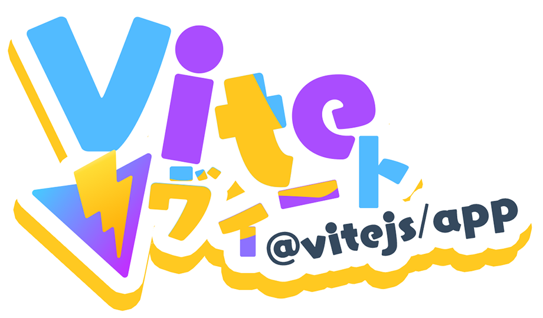

Vite で TypeScript 環境を構築して Phaser.js でゲームを作ってみた

Vite たけし (何)。
トップ画は今流行りの ServiceLogos より。
Vite に再入門
Vite というフロントエンドツールを試してみた。ホットリロード対応の開発サーバを立ち上げたり、組み込み済みの Rollup による高速かつ柔軟なビルドが出来たりするツールだ。
- ちなみに、今見ていただいているこのブログ (ウェブサイト) の開発環境はというと、BrowserSync で開発サーバを立て、自前でビルドスクリプトを書いて Unified.js (Remark・Rehype) で Markdown・HTML をビルドしていたりする
Vite 自体、そして内包される Rollup 自体も、以前ちょっとだけ触ってみたことはあるのだが、スッカリ忘れてしまっていたので、今回は完全素人のつもりでやり直している。
- 書こ記事 : 2020-08-10 Vue 3・Vite を触ってみる
- 過去記事 : 2020-09-04 イマドキは Webpack じゃなくて Rollup だ！Terser とともに Rollup を使ってみる
Vanilla な TypeScript プロジェクトを作るには、次の npm init コマンドを叩くだけ。ちなみに npm create コマンドは npm init のエイリアス。
$ npm init vite@latest my-app -- --template vanilla-ts
Phaser.js による 2D ゲーム作成に入門
今回 Vite でプロジェクトを作った理由は、ちょっとした 2D ゲームを作ってみたくなったからである。
ゲームというと、以前 Unity (WebGL) を使ってライツアウトを写経したことはあるが、その時は C# にも慣れていなくて、簡単な 2D ゲームを作るには Unity というフレームワークが重た過ぎる気がした。
- 過去記事 : 2021-10-22 Unity で 2D パズルゲーム作成を始めてみた
そこで今回は、ブラウザ JS ベースで動かせるゲームライブラリを探してみたところ、Phaser.js というモノが活発に開発されており、文献も多そうだったので、コチラを使ってみることにした。TypeScript による型定義もしっかりなされているので、VSCode でのコード補完機能を組み合わせて機能を推測しながら実装できそうだな、と思ったのもポイント。
どんなゲームを作るかについてだが、その昔「あんこはうす」というサイトでプレイできた「横スクロールで GO!」というゲームを再現してみることにした。しかし、当時のゲームプレイ映像などが見つからず、自分のおぼろげな記憶だけで再現することにした。
- 参考 : ゲーム：横スクロールでGO！ | 怪獣ヒロン | Flickr
- ネット上で唯一見つかった、ゲーム画面のスクリーンショット
まずはサンプルゲームの写経から
Vite でプロジェクトを作成し、まずは Phaser.js のサンプルゲームを TypeScript 化しながら写経してみた。参考にしたのは以下の記事あたり。
- 参考 : 【作業ログ】【Phaser】【Typescript】「Making your first Phaser 3 game」
- 参考 : dominik-selmeci/making-your-first-phaser-3-game-with-typescript: My approach to official tutorial from Phaser 3 with Typescript
Phaser.js は2024年現在で最新版の Ver 3 系を使用。古い Ver 2 系とは API が異なるので、参考文献を探す時に注意が必要。TypeScript の型定義が入っているので、.ts で import したら勝手に型注釈が入り、実装しやすい。Phaser.js が用意している各クラスを継承してパーツを実装していくことで作っていける。
そうして作ったモノは以下。
- デモ : Practice Phaser + TypeScript : 1st Game
- コード : practice-phaser-ts/src/1st at master · Neos21/practice-phaser-ts
無事動くモノが作れた。「Scene」という画面の概念と、「Sprite」「Image」といった部品定義、Collider (衝突判定) やゲームループといったゲームプログラミング特有の概念などが勉強できた。
横スクロールで GO! を作ってみる
それでは、「横スクロールで GO!」を作ってみようと思う。コレはどういうゲームかというと、以下のようなルール。
- マウスに追従してくる自キャラを操作する
- 「HP (体力)」があり、時間経過で徐々に減少していく
- HP が 0 になると自キャラが操作不能になり、墜落するとゲームオーバー
- 画面右側から飛んでくるアイテムを取得することで「HP」を回復できる
- 画面左側から飛んでくる敵に当たると「HP」が減少してしまう
…ということで、回復アイテムを回収しながら、長いこと自キャラを飛ばし続けられれば高スコア、というゲームだ。
ゲームシステム的には、「自キャラをマウスで操作できる」という点は「ブロック崩し」に近いし、「自キャラを移動するオブジェクトに当てると何らかのアクション」という点はシューティングゲームなどでもよく登場する基本的なシステムである。先程写経したサンプルゲームのコードをある程度再利用できるくらい似通っていたので、あとは愚直に実装していくだけだ。
サンプルゲームと本作で大きく異なるのは、自キャラの操作方法がキーボードかマウスか、という点である。キーボードの場合は、ゲームループ内で押下されたキーイベントを拾って処理するのだが、マウス操作の場合は pointermove イベントを検知して処理するので、ゲームループが大きく2箇所に分散される感じになってしまう。気を付けて実装しないと「単一責務の原則」を破った、分かりづらいコードになってしまい、バグを生みかねない。
ということで、pointermove イベントでのループは「Tween」と呼ばれる概念で自キャラの座標を変更するだけに留めた。基本的にはメインループを見れば、それぞれの処理をどこに委譲しているのかが分かるような構成を心掛けた。
「HP」と「スコア」の概念も、「Scene」クラス内に持たせても実装自体はできるが、一つのクラスが保持する「状態」が増えてしまうので、それぞれを独立したクラスに切り出しておくことにした。この辺、ゲームプログラミング的なお作法がもしかしたら他にあるのかもしれないけど、個人的には見通しの良いコードになったかなーと思う。
おかげさまでバグらしい挙動もなく、ゲームとして成立するモノが作れた。それがコチラ。
キャラクターやアイテム類のスプライトには、参加しているプロジェクト「アメザリズ」で作ったオリジナルの VRoid アバターを使用している。
- 過去記事 : 2023-12-31 2023年を振り返る
- 「なな子プロジェクト」「アメザリズ」について言及
ゲーム作りを優先してスプライト素材の品質を犠牲にしたので、見た目が「デスクリムゾン」みたいになっているけど、処女作にしてはそれなりに遊べる感じになって良かった。
Phaser.js メッチャ良い・Vite 超気楽
ということで、Vite で環境構築して、Phaser.js でゲームを作った。
Vite での環境構築は必要なモノがサッと揃って大変良いし、ビルドが高速で最高。イマドキの「ウェブアプリ」を作る前提のツールなので、HTML ファイルが複数あるような「ウェブページ」をビルドしようと思うと若干設定ファイルでの調整が必要だが、不可能ではないし分かりやすいレベルなので問題なし。ページ構成によっては vite.config.ts を書かない、ゼロ・コンフィグ・ファイルでのプロジェクト構成も取れそうなので、ホントに気楽で良い。Gulp でビルド処理をガリガリ書いていた時代、Webpack 地獄に悩まされた時代はもう終わったといって良さそう。
そして 2D ゲーム開発に向いている Phaser.js。TypeScript 対応というのが素晴らしく、様々な概念がコンポーネント化されていて実装しやすい。Unity WebGL よりも起動がスムーズだし、動作も快適で良い。2D のブラウザゲーを作るならコレで事足りるなー。最近あんまコーディングしていなくて実装量が多くて疲れた部分はあるけど、作っていて楽しかった。
今後はこの「横スクロールで GO! もどき」の完成度を上げて行ったりとか、他にもシューティングゲームやパズルゲームくらいなら Phaser.js で作れそうなので、もうちょっとゲーム作りをしていくかも。